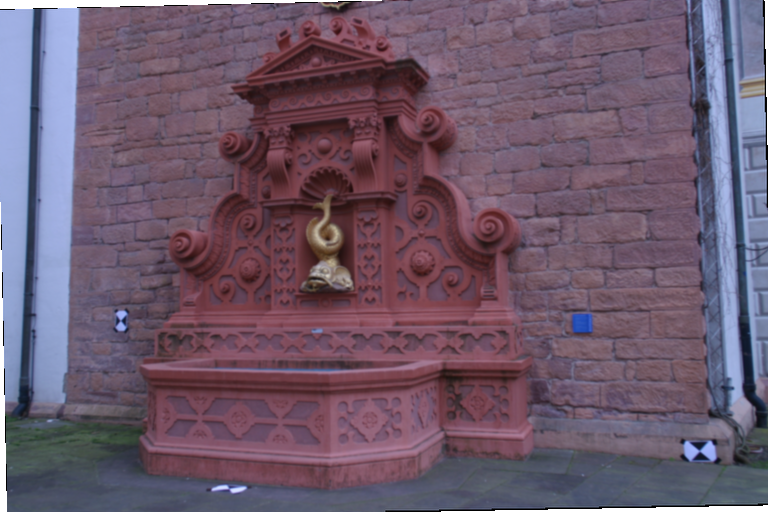
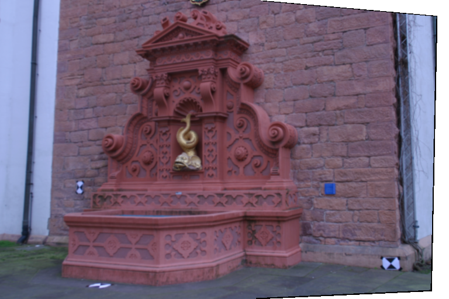
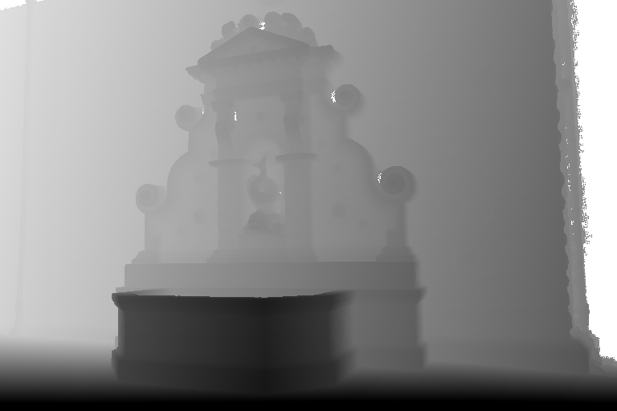
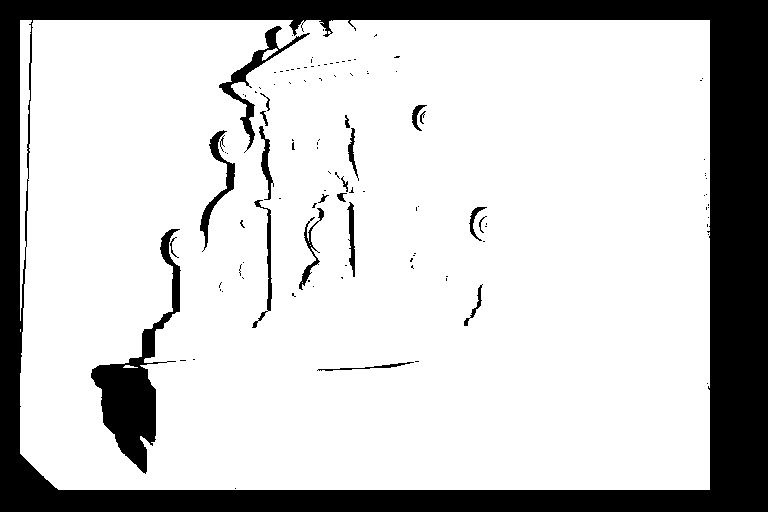
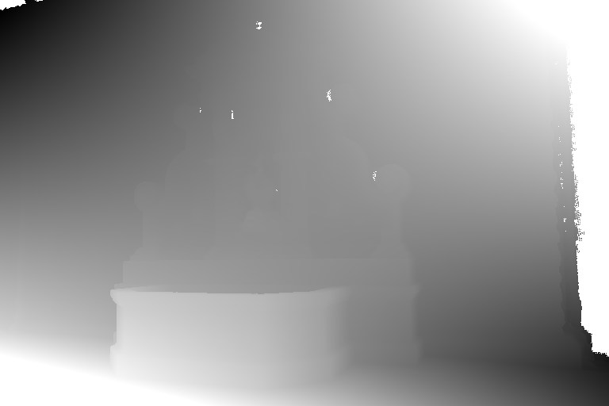

Fountain from: C. Strecha dense multiview stereo dataset.
Real scene, laser scan ground truth? high b/h (must compute) .
Factor 4 subsampling of frames 03 and 02 of the "fountain" sequence.
Rectification computed using the gound truth data, applying the Fusiello-Irsara method.
Points re-projected with the known camera matrices, and applying to the points the homografies from the rectification.
(Notice that the displacement of the points should be only horizontal, however we observe a small displacement in the vertical
axis. )
Unknown noise level, probably very low after resampling, error due to quantization noise with standard deviation 0.2887.
Unknown MTF but original images are band limited
Evaluation masks excludes boundaries and occluded areas.
Procedure : subsample, rectify, apply transformations to the point clouds (camera, scaling and homografy), compute occlusions
download dataset 768x512




Reprojection displacement in the vertical axis, the value of this displacement generally is between [-.06, .25] pixels.

See Notes:
* Generating the ground truth map from a point cloud
* Computation of the occlusions of a disparity map
* Subsampling the images